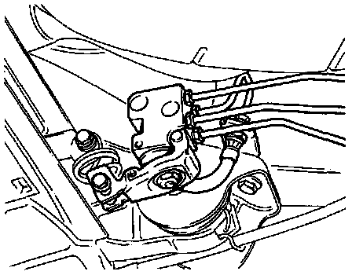

Load Compensator: Testing and Inspection
Brake Pressure Regulator Location:

The brake pressure regulator is mounted on a bracket and operated by a spring attached to the rear axle.
NOTE: The brake pressure regulator should be checked and if necessary adjusted following repairs to the rear suspension, or when there is excessive rear brake wear.
CHECKING
1. Depress brake pedal firmly once and release quickly (vehicle on ground).
2. Pressure regulator lever must move.
3. Test pressures using pressure gauge VAG 1310, or equivalent.